Idiographic prediction of self-regulated learning
Self-regulated learning takes place within the individual. Learners set goals, monitor their progress, and adjust their effort in response to the demands of learning. These processes can differ across learners and change over time. For one learner, daily effort may be closely associated with planning; for another, control over learning or access to social support may be more informative. Understanding these differences requires repeated observations of each learner and methods that can represent their individual patterns.
Idiographic prediction addresses this purpose by fitting a separate model to each person using that person’s own observations. An idiographic model of effort learns from variation across occasions within one learner and is evaluated on additional observations from that same learner. Developing, evaluating, and interpreting these person-specific models is a central purpose of idiographic. The package brings together the comparison of prediction algorithms, the evaluation of individual and pooled models, and the examination of predictors for each person.
Saqr et al. (2024) illustrate this approach in their study of students’ self-regulation. They fitted random forests, elastic-net regression, and BISCWIT models separately for each student to predict effort, metacognition, motivation, and enjoyment. Their analyses examined both predictive accuracy and the importance of the predictors. Accuracy varied across students and algorithms, and the ordering of important predictors differed across students. Comparisons with general models further showed why a summary of performance or predictor importance for the sample needs to be accompanied by results for individual learners.
This chapter follows that sequence of questions using the
srl teaching data: how accurately can effort be predicted
for each learner, how does accuracy depend on the algorithm, which
predictors contribute to each learner’s predictions, and how do these
results compare with a pooled model? It then examines whether predictive
accuracy changes across evaluation periods. The examples use a different
dataset, a smaller set of outcomes, and temporal validation. They
illustrate the paper’s analytical questions; the numerical results
describe the examples presented here.
| Analytical question | Package functions |
|---|---|
| How accurately can each learner’s effort be predicted by different algorithms? |
fit_ml(), metrics(),
plot_metrics()
|
| Does fitting a model separately for each learner improve accuracy? |
fit_ml(scope = "both"),
metrics()
|
| Which predictors contribute to an individual learner’s predictions? |
importance(),
plot_importance()
|
| How closely do predictions follow observed effort? |
predictions(),
plot_predictions()
|
| How does predictive accuracy vary across evaluation periods? |
fit_rolling(), predictions(),
metrics()
|
Contemporaneous prediction
The examples predict effort from measurements collected on the same occasion. For example, a model fitted using days 1–20 would use planning, monitoring, and the other predictors measured on day 21 to predict effort on day 21. This is contemporaneous prediction: the predictors and outcome refer to the same day. Earlier days provide the observations from which the model is estimated. The predictor values from the evaluation day are then supplied to that fitted model.
The distinction matters when interpreting the results. Accuracy
describes how well effort can be predicted when the other measurements
from that occasion are available. Predicting effort in advance would
require predictors available before the outcome, such as measurements
from the previous day. Lagged predictors can be constructed with
preprocess_panel() for that purpose.
Data and predictors
The examples use the same 12 learners from the srl
dataset throughout. Each learner has 156 ordered records. The
day variable indexes measurement occasions within each
learner; the day-numbered examples describe this ordering. Effort is the
outcome. The eight predictors cover self-efficacy, task value, planning,
monitoring, control of learning, help seeking, social support, and
organizing. This broader predictor set allows the analysis to examine
whether different aspects of self-regulation contribute to predictions
for different learners.
Model development and evaluation
Idiographic and pooled models
Setting scope = "individual" fits an idiographic model
to each learner. For example, Aisha’s model is fitted using Aisha’s
records and predicts Aisha’s effort. With 12 learners, each algorithm
therefore produces 12 individual models. Their coefficients, selected
settings, and predictions can differ because each model is estimated
from a different learner’s observations.
Setting scope = "pooled" fits one model using the
combined records of all learners. The same fitted model is then applied
to each learner’s test observations. In this example, learner identity
identifies the records and their chronological order; it is excluded
from the predictors. The pooled model consequently applies a common
prediction rule to all learners. Setting scope = "both"
fits both types of models and allows their accuracy to be compared using
the same test observations.
The fit_ml() function assesses which algorithm predicts
effort most accurately and whether accuracy improves when models are
fitted separately for each learner. A pooled model has more observations
available for estimation. An idiographic model can represent
relationships specific to one learner, but has fewer observations from
which to estimate them. The comparison establishes how this trade-off
affects prediction in the data being analysed. Models for groups of
learners are also supported through scope = "subgroup";
their construction and evaluation are developed in the subgroup
vignette.
Training, validation, and testing
With time = "day", observations are ordered separately
for each learner. When tune = TRUE, they are assigned to
three consecutive periods. Training estimates the model; validation
selects model settings; testing evaluates the selected model on
observations withheld from its development. For example, days 1–15 could
be used for training, days 16–20 for validation, and days 21–25 for
testing.
Three periods are needed when settings must be selected. Ridge regression, for example, requires a choice about how strongly to reduce the magnitude of the coefficients. Selecting that setting on the test observations would favour a model that happens to perform well in that particular period and could make its reported accuracy overly optimistic. A separate validation period allows the final test observations to remain independent of this choice. When settings are fixed in advance, training and testing are sufficient.
The example specifies test_prop = 0.2 and
valid_prop = 0.2. For each learner’s 156 records, the final
32 observations form the test period. Of the preceding 124 observations,
the last 25 are reserved for validation.
| Period | Occasions in this example | Purpose |
|---|---|---|
| Training | 1–99 | Estimate candidate models |
| Validation | 100–124 | Select settings for each model |
| Test | 125–156 | Evaluate predictions on unused observations |
After the settings have been selected, each model is fitted again using occasions 1–124. It then predicts effort for occasions 125–156 using the predictors measured on those occasions. Preprocessing is estimated from the fitting data. In the idiographic analysis, settings and preprocessing are estimated separately for each learner. All algorithms use the same predictors and test observations, which makes their errors comparable.
Choice of algorithms
Different algorithms represent the relationship between the predictors and effort in different ways. Linear regression estimates an additive linear relationship. Regularised regression reduces coefficient magnitudes, which can help when predictors overlap in the information they provide or when there are few observations. Nearest-neighbour and tree models allow relationships that depend on where an observation lies in the predictor space. Comparing these approaches examines whether their different assumptions lead to useful differences in accuracy for particular learners.
| Algorithm | Prediction rule | Setting examined during validation |
|---|---|---|
| Mean | Predict the mean effort in the fitting data | None |
| Linear regression | Add the contributions of the predictors using estimated coefficients | None |
| Ridge regression | Fit a linear model while reducing coefficient magnitudes | Penalty strength, lambda
|
| Elastic-net regression | Combine ridge and lasso penalties; some coefficients can become zero |
lambda, with alpha = 0.5
fixed here |
| K-nearest neighbours | Average effort among observations with similar predictor values | Number of neighbours, k
|
| Regression tree | Split observations using predictor thresholds and predict within the resulting groups | Fixed native implementation |
The mean model provides a reference. At the individual level it predicts each learner’s own mean effort from the fitting period; at the pooled level it predicts the mean across all learners’ fitting records. An improvement over this reference indicates that using the predictors adds information beyond the corresponding average effort.
The six algorithms below are included in idiographic
and require no optional modelling packages. Elastic-net regression
connects the example to one of the approaches used by Saqr et al. (2024). A later example adds
random forests through ranger. The
models() function lists available algorithms,
implementations, and tunable settings.
models(task = "regression", available = TRUE, estimator = "native")
#> MODELS
#> Registered 10
#> Usable here 10
#>
#> model estimator package regr class here tunes
#> --------------------------------------------------------------
#> mean native base yes - yes -
#> linear native base yes - yes -
#> ridge native base yes yes yes lambda
#> lasso native base yes yes yes lambda
#> elastic native base yes yes yes lambda
#> pcr native base yes - yes ncomp
#> knn native base yes yes yes k
#> tree native base yes yes yes -
#> boost native base yes yes yes rounds
#> spline native base yes yes yes df
#>
#> model = names above are enough; estimator = only to disambiguateIdiographic accuracy across algorithms and learners
Fitting the models
The following call fits each algorithm to each learner and also fits
its pooled counterpart. tune = TRUE selects settings within
the validation period. The first results below concern the idiographic
models; the pooled models are retained for the subsequent
comparison.
set.seed(20260902)
ml_fit <- fit_ml(
analysis_data,
y = "effort", x = predictor_names,
id = "name", time = "day", scope = "both",
model = c("mean", "linear", "ridge", "elastic", "knn", "tree"),
test_prop = 0.2, valid_prop = 0.2, tune = TRUE
)
metrics(ml_fit, scope = "individual", overall = TRUE)
#> scope model estimator subject subgroup n rmse mae
#> 1 individual mean native .overall .all 384 23.320830 18.520414
#> 2 individual linear native .overall .all 384 16.520642 12.233637
#> 3 individual ridge native .overall .all 384 16.454440 12.204387
#> 4 individual elastic native .overall .all 384 16.468742 12.203467
#> 5 individual knn native .overall .all 384 8.710794 3.571485
#> 6 individual tree native .overall .all 384 17.338127 13.284684
#> bias r_squared
#> 1 -0.0154288 0.2839905
#> 2 1.1722922 0.6406773
#> 3 1.1877884 0.6435513
#> 4 1.1810716 0.6429314
#> 5 0.5153314 0.9001044
#> 6 -0.2410639 0.6042370Overall accuracy of the idiographic models
Root mean squared error (RMSE) expresses prediction error in the units of effort and gives greater weight to larger errors. Lower values indicate more accurate predictions. The overall RMSE combines the errors from all 384 test observations: 32 observations for each of 12 learners. It summarises the performance of the collection of idiographic models.
The individual nearest-neighbour models have an overall RMSE of 8.7, compared with 23.3 for the individual mean models. Ridge, elastic-net, and linear regression have similar errors, with RMSE values of approximately 16.5. The individual trees have an RMSE of 17.3. These results indicate that the predictors improve accuracy beyond the individual means and that nearest neighbours performs particularly well in this dataset.
plot_metrics(ml_fit, scope = "individual", metric = "rmse")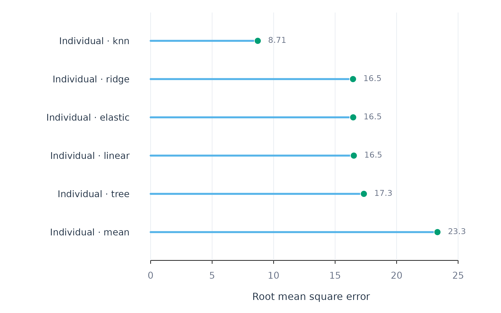
Figure 1. Overall test RMSE for the six sets of idiographic models. Each value combines the test predictions from 12 separately fitted learner models.
Distribution of accuracy across learners
The overall error leaves open how accurately effort is predicted for each learner. Following the person-level comparisons in Saqr et al. (2024), the next figure shows the distribution of RMSE and test-set R-squared across learners for each algorithm. Each point represents one learner. The boxes summarise the median and the middle half of the learner values.
Test-set R-squared compares the sum of squared prediction errors with the variation in that learner’s observed test outcomes. A value of 1 indicates exact predictions, 0 corresponds to predicting the test-period mean, and a negative value indicates larger errors than that reference. This measure can be undefined when the test outcome is constant. The test-period mean used in its definition differs from the mean model, which estimates its prediction from the fitting period.
plot_metrics(ml_fit, scope = "individual",
metric = c("rmse", "r_squared"), type = "boxplot")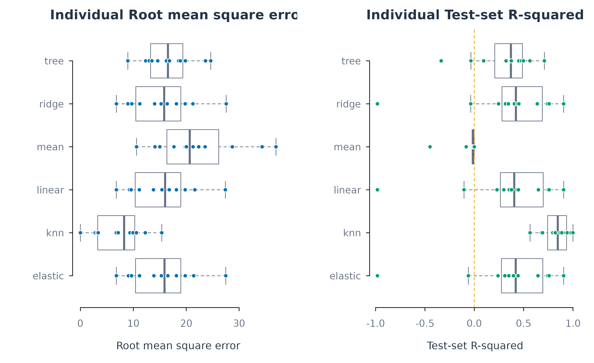
Figure 2. Variation in idiographic accuracy across learners. Points show individual learners, and boxes summarise their distribution. Lower RMSE and higher test-set R-squared indicate better prediction; negative R-squared values are retained.
The density variant presents the same learner-level results as smoothed curves. Each short vertical mark represents one learner. A common smoothing bandwidth and height scale are used within each panel, allowing the shapes of the algorithm distributions to be compared. With 12 learners, these curves provide a descriptive view of the observed distribution; the marks retain the individual values. Reflection at zero RMSE and at R-squared of one keeps the curves within the possible range of each measure.
plot_metrics(ml_fit, scope = "individual",
metric = c("rmse", "r_squared"), type = "density")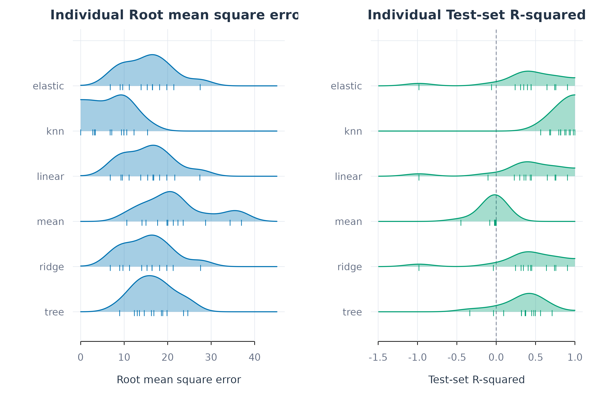
Figure 2b. Density variant of the learner-level accuracy distributions. Each ridge represents one algorithm, and marks show the 12 learner values. Negative R-squared values remain visible.
For elastic-net regression, individual RMSE ranges from 6.8 to 27.5 and R-squared ranges from approximately -0.98 to 0.91. Nearest-neighbour RMSE ranges from 0.0 to 15.4. Thus, the same algorithm can predict one learner much more accurately than another. RMSE also depends on how much effort varies: an error of a given size can represent a larger fraction of the variation for a learner whose effort is relatively stable.
Algorithm comparisons for individual learners
The next figure retains each learner’s identity. The points show RMSE for an algorithm, and the grey segments connect that error to the corresponding learner’s mean-model error. This comparison identifies learners for whom a particular algorithm adds predictive information beyond their own average level of effort. Each panel uses the same axis scale and learner order.
plot_subjects(ml_fit, scope = "individual", metric = "rmse",
reference = "mean")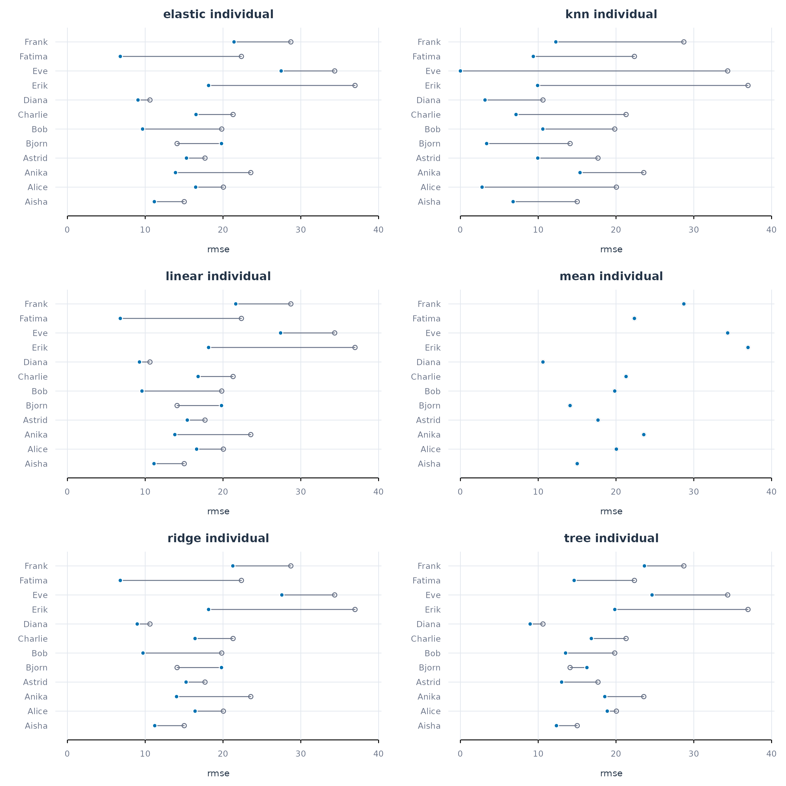
Figure 3. Test RMSE by learner and algorithm. Coloured points represent fitted models; open circles represent each learner’s mean-model error. Grey segments connect the two values for the same learner.
For example, Fatima’s elastic-net model has an RMSE of 6.8, while her nearest-neighbour model has an RMSE of 9.4. Eve’s nearest-neighbour model predicts the test observations exactly, while her elastic-net model has an RMSE of 27.5. The algorithm with the lowest overall error therefore need not be the most accurate for every learner. The exact predictions for some learners also reflect repeated patterns in these teaching data; their accuracy should be reassessed in other datasets and evaluation periods.
These comparisons describe the test results of the specified algorithms. Choosing an algorithm separately for each learner on the basis of these same test results would require a further independent evaluation of that selection procedure. In an applied analysis, algorithm selection can be performed within the development period and the chosen models evaluated on a final period reserved for that purpose.
Selection of model settings
Tuning is also person-specific. For k-nearest neighbours,
k determines how many similar observations contribute to a
prediction. A small value uses a highly local comparison; a larger value
averages over a broader set of observations. The tuning()
function shows the validation error for each candidate setting and
learner. The example inspects Aisha’s model, and the plot compares its
candidate settings.
tuning(ml_fit, scope = "individual", model = "knn", subject = "Aisha")
#> scope model estimator subject subgroup parameter value n rmse
#> 1 individual knn native Aisha .none k 1 25 4.918074
#> 2 individual knn native Aisha .none k 3 25 8.124752
#> 3 individual knn native Aisha .none k 5 25 9.550017
#> 4 individual knn native Aisha .none k 9 25 10.241190
#> 5 individual knn native Aisha .none k 7 25 10.993781
#> 6 individual knn native Aisha .none k 15 25 11.594233
#> mae accuracy brier rank
#> 1 2.158730 NA NA 1
#> 2 6.201058 NA NA 2
#> 3 7.390476 NA NA 3
#> 4 7.844797 NA NA 4
#> 5 8.072562 NA NA 5
#> 6 8.910053 NA NA 6
plot_tuning(ml_fit, scope = "individual", model = "knn", subject = "Aisha",
metric = "rmse")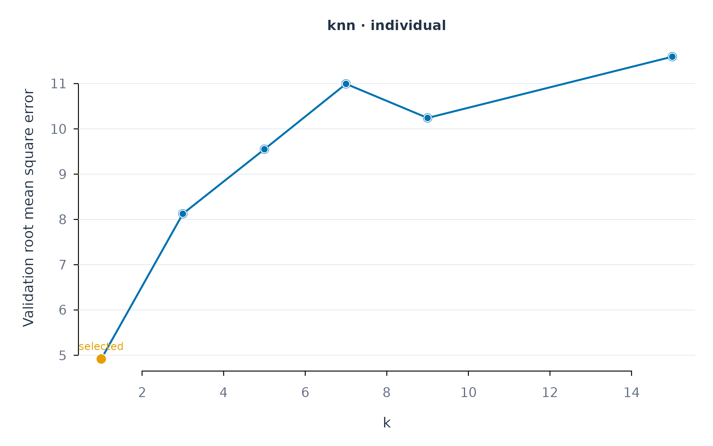
Figure 4. Validation RMSE for candidate neighbourhood sizes in Aisha’s idiographic model. The highlighted point identifies the setting selected within her development period.
The selected setting is subsequently refitted using that learner’s
combined training and validation observations. Candidate values can be
specified through grid, such as
grid = list(knn = list(k = c(1, 3, 5, 9))). For elastic-net
regression, this chapter fixes the ridge–lasso mixture at
alpha = 0.5 and selects the penalty strength. This is a
narrower search than the paper’s analysis, which considered both the
mixture and penalty.
Idiographic and pooled prediction
Overall comparison
The pooled counterparts use the same algorithms, predictors, and test observations. The following results therefore address whether fitting a common model to all learners changes predictive accuracy relative to fitting separate models.
metrics(ml_fit, overall = TRUE)
#> scope model estimator subject subgroup n rmse mae
#> 1 pooled mean native .overall .all 384 27.560352 22.974866
#> 2 individual mean native .overall .all 384 23.320830 18.520414
#> 3 pooled linear native .overall .all 384 19.432794 15.822290
#> 4 individual linear native .overall .all 384 16.520642 12.233637
#> 5 pooled ridge native .overall .all 384 19.436340 15.828670
#> 6 individual ridge native .overall .all 384 16.454440 12.204387
#> 7 pooled elastic native .overall .all 384 19.435724 15.827061
#> 8 individual elastic native .overall .all 384 16.468742 12.203467
#> 9 pooled knn native .overall .all 384 8.538874 2.398145
#> 10 individual knn native .overall .all 384 8.710794 3.571485
#> 11 pooled tree native .overall .all 384 24.006158 19.290631
#> 12 individual tree native .overall .all 384 17.338127 13.284684
#> bias r_squared
#> 1 0.02294325 -6.930121e-07
#> 2 -0.01542880 2.839905e-01
#> 3 1.54599247 5.028341e-01
#> 4 1.17229224 6.406773e-01
#> 5 1.54132593 5.026527e-01
#> 6 1.18778841 6.435513e-01
#> 7 1.54333895 5.026842e-01
#> 8 1.18107156 6.429314e-01
#> 9 -0.12280559 9.040087e-01
#> 10 0.51533138 9.001044e-01
#> 11 0.58057511 2.412895e-01
#> 12 -0.24106389 6.042370e-01
plot_metrics(ml_fit, metric = "rmse")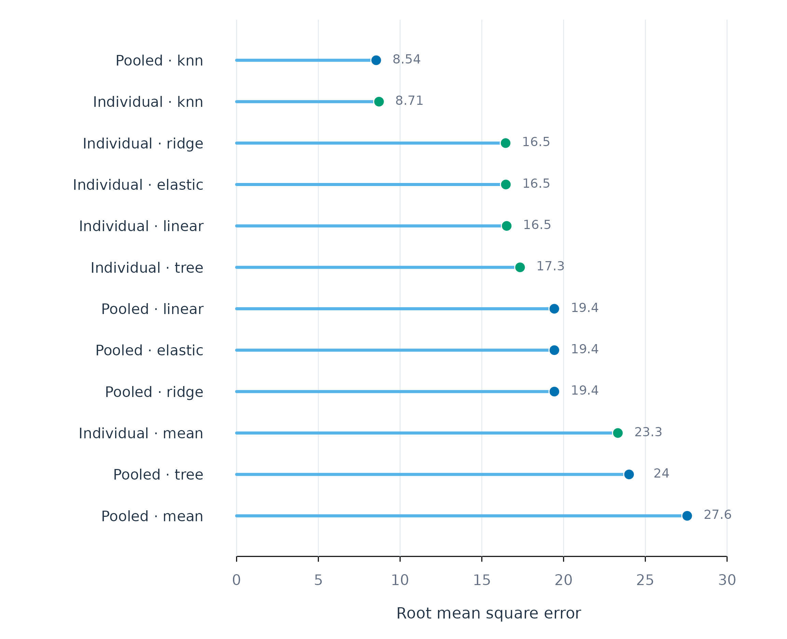
Figure 5. Overall test RMSE for pooled and idiographic models. Each pair uses the same algorithm and evaluation observations.
The comparison depends on the algorithm. Elastic-net RMSE decreases from 19.4 for the pooled model to 16.5 for the idiographic models. Tree-model RMSE decreases from 24.0 to 17.3. In contrast, the nearest-neighbour models have similar overall errors: 8.5 for the pooled model and 8.7 for the idiographic models. The data thus provide different answers to the question of individualisation for different algorithms.
Benefits and losses for individual learners
An overall difference can combine improvements for some learners with
poorer predictions for others. The next figure compares the two models
within each learner. The compare_predictions() accessor
returns the paired results, and
plot_subjects(reference = "pooled") displays them directly.
The plotted difference is pooled RMSE minus idiographic RMSE. Positive
values indicate more accurate idiographic predictions; negative values
indicate more accurate pooled predictions.
plot_subjects(ml_fit, scope = "individual", metric = "rmse",
reference = "pooled")
Figure 6. Change in test RMSE when moving from pooled to idiographic models. Values to the right of zero favour idiographic models; values to the left favour pooled models.
The density variant summarises the same paired differences across learners. Its position relative to zero shows whether improvements or losses are more common, while the spread shows how much the consequences of fitting individual models differ across learners.
plot_subjects(ml_fit, scope = "individual", metric = "rmse",
reference = "pooled", type = "density")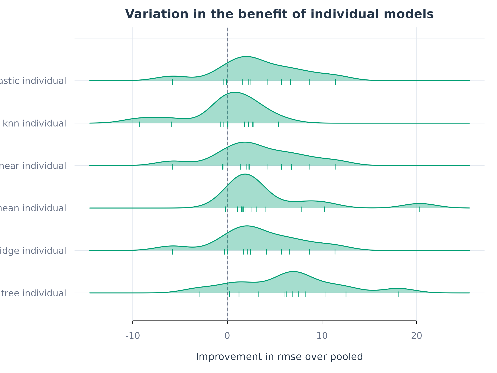
Figure 6b. Density variant of the changes in RMSE from pooled to idiographic models. Positive values favour idiographic models, negative values favour pooled models, and marks retain each learner’s paired difference.
Individual elastic-net models improve RMSE for 9 of the 12 learners. Aisha’s error decreases from 22.6 to 11.2, whereas Bjorn’s increases from 14.0 to 19.8. For nearest neighbours, individual models improve accuracy for 6 learners, reduce accuracy for 4, and tie with the pooled model for 2. These results support evaluating individualisation at the learner level as well as reporting a single overall score.
A lower error for the pooled model establishes better prediction in that evaluation period. It leaves open whether the predictors contribute in the same way for every learner. Examining person-specific predictor importance addresses this additional question.
Predictors of individual learners’ effort
Predictive importance
Predictive accuracy establishes how well a model reproduces unseen effort values. Predictor importance examines which measurements contribute to those predictions. This distinction is central to the analysis in Saqr et al. (2024), where the important predictors and their ordering varied across students. The following analysis examines that variation for the idiographic elastic-net and nearest-neighbour models.
Permutation importance provides a common measure for these two algorithms. For each learner, one predictor is shuffled among that learner’s test observations while the fitted model and other predictors are held fixed. The increase in RMSE measures how much predictive accuracy is lost when that predictor’s correspondence with the outcome and other predictors is disrupted. The procedure is repeated 20 times and the increases are averaged. Larger positive values indicate a greater contribution to the model’s test accuracy.
set.seed(20260902)
predictor_importance <- importance(
ml_fit, model = c("elastic", "knn"),
method = "permutation", repeats = 20
)Values close to zero indicate little change in error under this procedure. Negative values indicate that shuffling improved accuracy on the test observations. Such values can occur because of sampling variation or because the fitted model uses a predictor in a way that transfers poorly to those observations. Correlated predictors can also share information, so their separate importance values require interpretation alongside their relationships. Permutation importance describes the fitted prediction rule and provides no estimate of an intervention effect.
Predictor profiles for each learner
The next figure presents the five highest-ranked predictors in each learner’s elastic-net model, following the person-specific presentation in the paper. All panels use the same horizontal scale. The models use all eight predictors; displaying five focuses attention on those with the largest permutation importance. Elastic net is used here as a prespecified reference for examining individual differences, with a subsequent comparison to nearest neighbours.
plot_importance(predictor_importance, model = "elastic", scope = "individual",
method = "permutation", type = "person", n = 5,
xlim = c(-4, 28))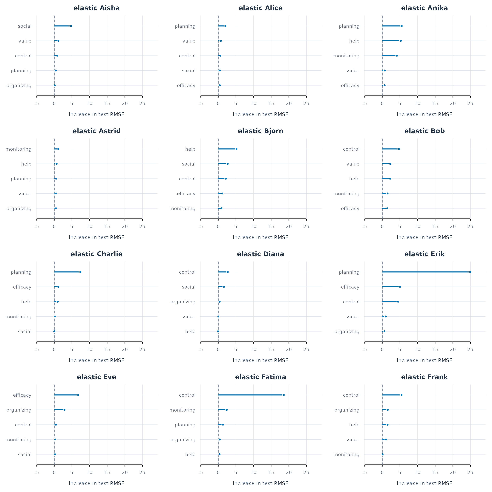
Figure 7. The five highest-ranked predictors for each learner’s idiographic elastic-net model. Importance is the mean increase in test RMSE after shuffling a predictor. A common scale permits comparison across learners.
Planning has the largest importance for Erik, with an increase in RMSE of approximately 24.9 when shuffled. Control of learning is the leading predictor for Fatima, with an increase of 18.6. Social support ranks first for Aisha, whereas efficacy ranks first for Eve. These profiles identify which measurements the individual models use most strongly and show the information that would be lost by reporting only an average ranking.
For a single learner, the same type of display is available directly
through plot_importance(), for example:
plot_importance(ml_fit, model = "elastic", scope = "individual",
subject = "Aisha", method = "permutation", repeats = 20, n = 5)Variation across algorithms
An importance profile also depends on the fitted algorithm. A linear model and a nearest-neighbour model may use different aspects of the same predictors. The following figure repeats the learner-level display for nearest neighbours, retaining the scale used for elastic net. Comparing the two figures shows which features are prominent across algorithms and which are specific to a particular prediction rule.
plot_importance(predictor_importance, model = "knn", scope = "individual",
method = "permutation", type = "person", n = 5,
xlim = c(-4, 28))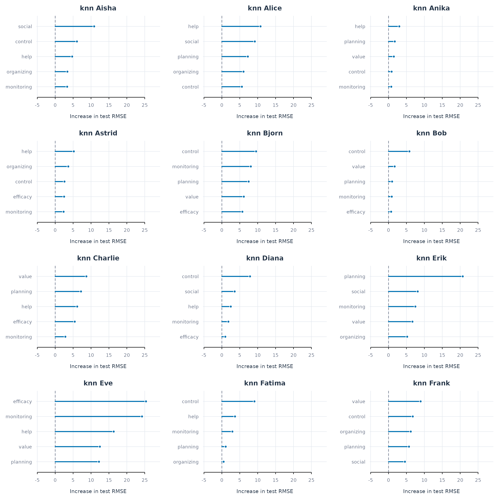
Figure 8. The five highest-ranked predictors for each learner’s idiographic nearest-neighbour model. The scale matches Figure 7, allowing the size and ordering of importance values to be compared across algorithms.
Some leading predictors agree across algorithms: planning ranks first for Erik, control for Fatima, social support for Aisha, and efficacy for Eve. Other profiles differ. For Anika, planning ranks first under elastic net and help seeking ranks first under nearest neighbours. These comparisons place predictor importance alongside the accuracy of the model that produced it. Agreement across algorithms provides evidence of a recurring predictive pattern; disagreement identifies a result that depends on how the relationship was modelled.
Frequency and distribution of important predictors
The summarize_importance() accessor provides tidy
summaries of the individual profiles. The corresponding
plot_importance() options display these results directly.
Two summaries complement the individual profiles. The first counts how
many learners have a predictor among their five highest-ranked features.
The second shows the distribution of importance values for each
predictor. These address different questions: a feature may recur in
many learners’ profiles yet contribute much more strongly for some
learners than others.
plot_importance(predictor_importance, scope = "individual",
method = "permutation", type = "frequency", n = 5)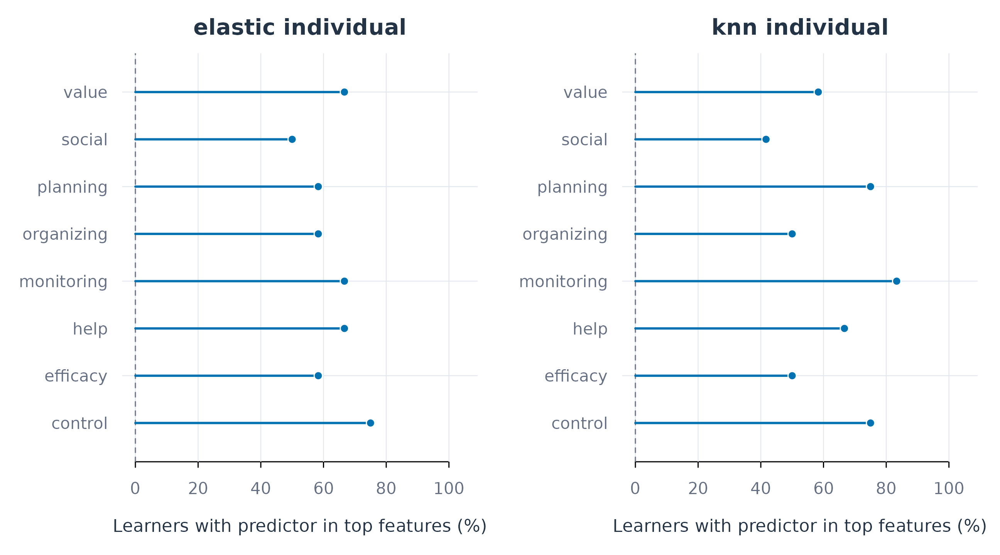
Figure 9. Percentage of learners for whom each predictor is among the five highest-ranked features. Ties at the fifth rank are retained.
A top-five ranking is relative to the other predictors in the same model. A high frequency therefore describes how commonly a feature appears near the top of the profiles; it does not establish that the feature has a large importance value for every learner. The distribution plot retains the size of the contributions, including values near or below zero.
plot_importance(predictor_importance, scope = "individual",
method = "permutation", type = "boxplot")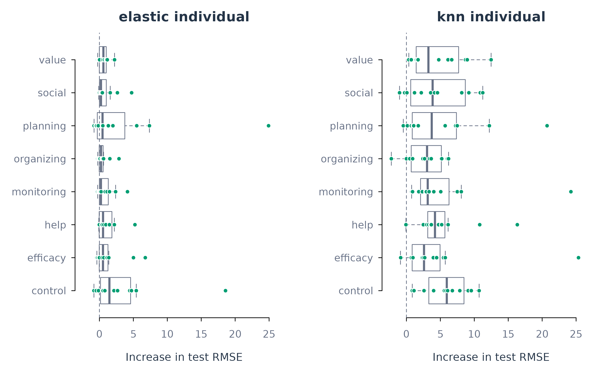
Figure 10. Distribution of permutation importance across learners for each predictor and algorithm. Each point represents one idiographic model; boxes show the median and middle half of the values.
A density variant shows where the importance values are concentrated and how far they extend across learners. The short marks retain the observations underlying each curve, including values below zero. All predictors within an algorithm use a common smoothing bandwidth and height scale. The two panels use the same horizontal scale to support comparison across algorithms.
plot_importance(predictor_importance, scope = "individual",
method = "permutation", type = "density")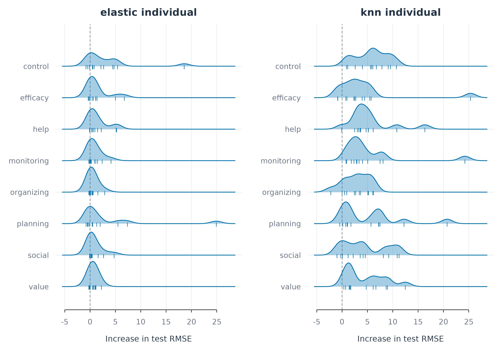
Figure 10b. Density variant of predictor importance across learners for elastic net and nearest neighbours. Marks show individual values, and the dashed line indicates zero importance. Curves summarise variation across learners rather than uncertainty in a mean.
For elastic net, the large planning contribution for Erik and control contribution for Fatima occur alongside much smaller contributions for other learners. The mean importance of a predictor consequently combines individual models that may rely on that predictor to very different extents. Both the distribution and the individual panels are needed to interpret that mean.
Idiographic and pooled predictor importance
Averaging importance across idiographic models and calculating importance for a pooled model are distinct operations. The first summarises separate prediction rules estimated for different learners. The second describes a single rule estimated from their combined records. The next comparison uses permutation importance calculated within each learner’s test records for both types of models, then averages those values with equal weight for each learner.
plot_importance(predictor_importance, method = "permutation",
type = "comparison")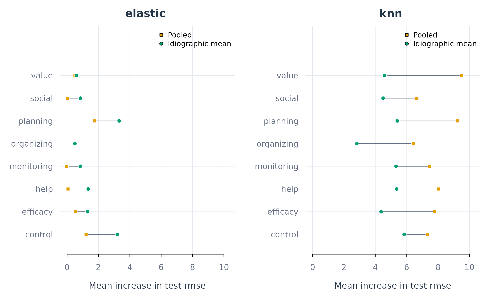
Figure 11. Mean permutation importance from idiographic models and from the pooled model, evaluated within each learner. Orange squares represent the pooled model; teal circles represent the mean of the separate idiographic models.
Planning has the highest average importance under both pooled and idiographic elastic net. For nearest neighbours, task value ranks first for the pooled model, whereas control ranks first when importance is averaged across idiographic models. The person-level figures further show that neither summary provides a complete description of every learner’s predictor profile. This is the substantive reason for retaining the individual models and their interpretation alongside the aggregate comparison.
Predicted and observed effort
The preceding analyses summarise errors and predictor contributions. Plotting predictions over time shows how those errors arise. A model may consistently overestimate effort, miss a few unusual observations, or fail to follow repeated changes. The following plots compare elastic-net and nearest-neighbour predictions for Aisha, Bjorn, and Eve, using the same learners in both displays.
plot_predictions(ml_fit, model = "elastic", scope = "individual",
subject = c("Aisha", "Bjorn", "Eve"), n_subjects = 3)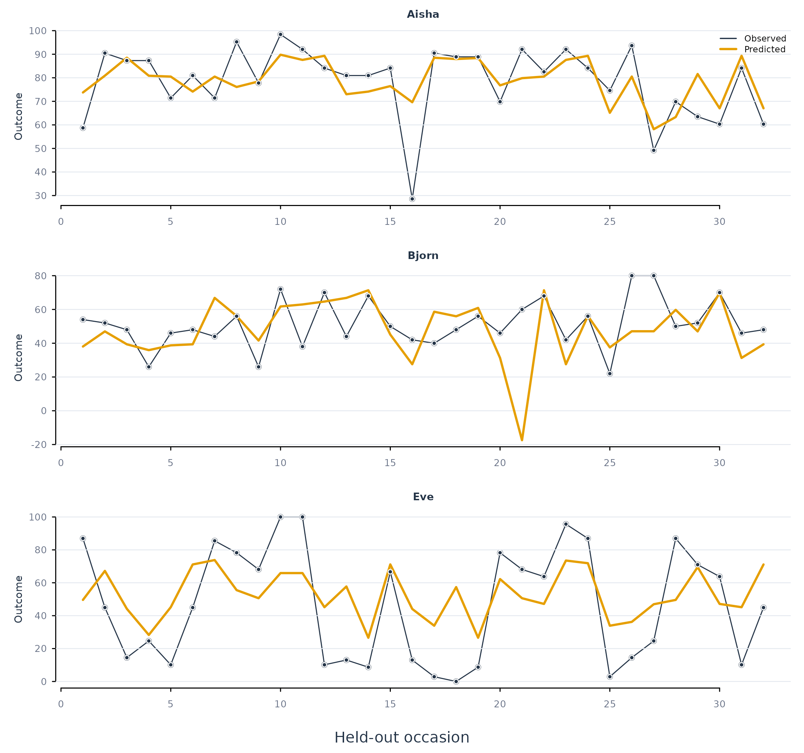
Figure 12. Observed effort and idiographic elastic-net predictions for three learners. Black points show observations and orange lines show predictions on the withheld occasions.
plot_predictions(ml_fit, model = "knn", scope = "individual",
subject = c("Aisha", "Bjorn", "Eve"), n_subjects = 3)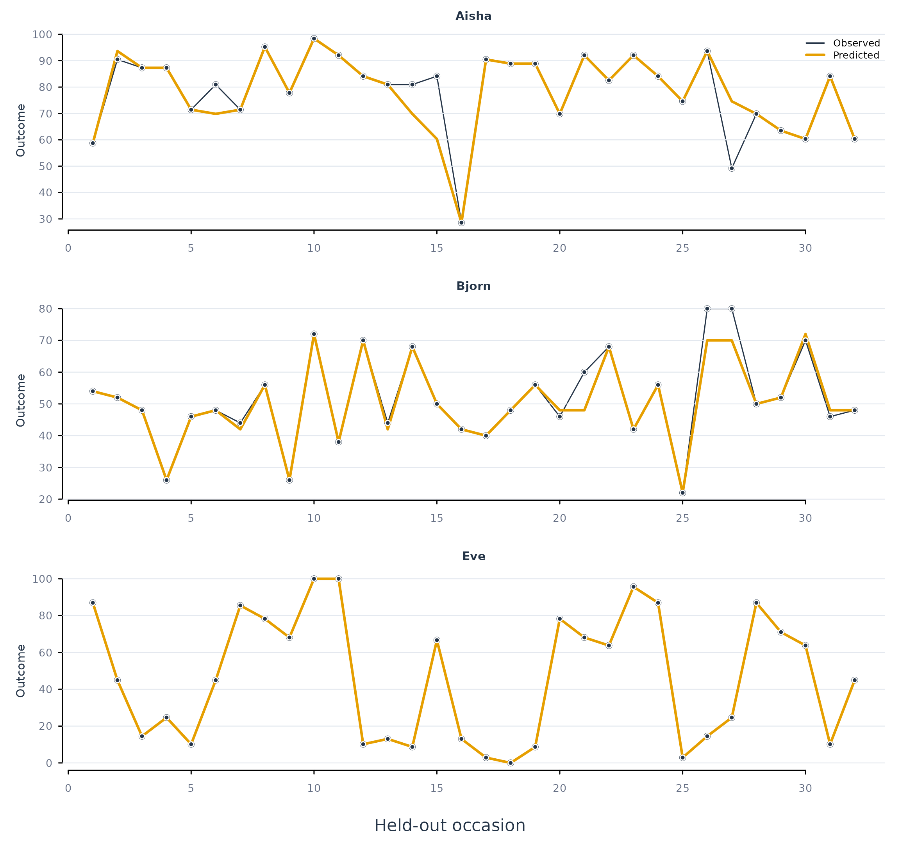
Figure 13. Observed effort and idiographic nearest-neighbour predictions for the same learners as Figure 12.
Eve’s exact nearest-neighbour predictions and larger elastic-net errors illustrate how algorithms can differ in their ability to represent the patterns in a learner’s records. These displays also locate individual errors within the evaluation period, information that a single RMSE value cannot provide.
Additional algorithms: random forests
Random forests were one of the approaches examined by Saqr et al. (2024). A forest combines
predictions from many trees, each constructed using variation in the
sampled observations and candidate predictors. This allows it to
represent nonlinear relationships and interactions. In
idiographic, model = "forest" uses the
ranger implementation. The following extension is
evaluated when ranger is installed and uses the same
predictors and temporal splits as the preceding comparisons.
set.seed(20260902)
forest_fit <- fit_ml(
analysis_data, y = "effort", x = predictor_names,
id = "name", time = "day", scope = "both",
model = "forest", estimator = "ranger", num_trees = 500,
test_prop = 0.2, valid_prop = 0.2, tune = TRUE
)
metrics(forest_fit, overall = TRUE)
#> scope model estimator subject subgroup n rmse mae bias
#> 1 pooled forest ranger .overall .all 384 8.170813 4.835401 0.7042881
#> 2 individual forest ranger .overall .all 384 7.823660 4.486588 0.5586469
#> r_squared
#> 1 0.9121056
#> 2 0.9194156
plot_subjects(forest_fit, scope = "individual", model = "forest", metric = "rmse")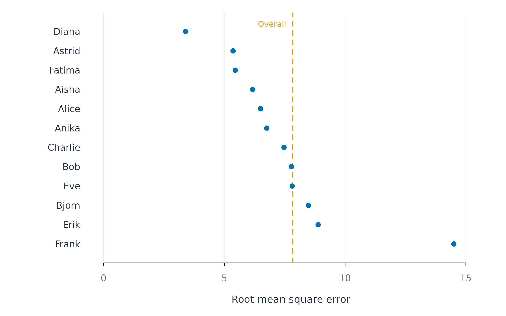
Figure 14. Learner-level test RMSE for idiographic random forests. The dashed line marks the overall RMSE across their test predictions.
Here, validation selects mtry, the number of candidate
predictors sampled at a split, while the number of trees is fixed at
500. The forest can be examined with the same metrics(),
predictions(), and importance() functions used
above. The paper also used BISCWIT, which is outside the algorithms
demonstrated in this chapter. Algorithm choice should reflect the
available observations, the relationships under study, and validation
performance; the paper’s relative performance of algorithms is an
empirical result from its own data.
Predictive accuracy across time
Repeated evaluation of idiographic models
A final test period provides one assessment of accuracy. A learner’s
study patterns may change during a course, and an algorithm that
performs well in one period may perform differently in another. The
fit_rolling() function examines this variation by
repeatedly fitting models to past observations and evaluating them on
the observations that follow.
For example, a model could first be fitted using days 1–20 and evaluated on days 21–25, then fitted using days 1–25 and evaluated on days 26–30. Each fitting and evaluation cycle is called a fold. On each evaluation day, the model uses that day’s predictors to predict that day’s effort. The training period expands as more observations become available.
The following analysis repeats the idiographic and pooled comparisons for elastic net and nearest neighbours. It uses four non-overlapping evaluation periods of eight observations each. The first fold develops models on occasions 1–124 and evaluates them on 125–132. The remaining folds extend the development period by eight observations and evaluate occasions 133–140, 141–148, and 149–156, respectively. Tuning occurs separately within each fold’s development period.
set.seed(20260902)
rolling_fit <- fit_rolling(
analysis_data, y = "effort", x = predictor_names,
id = "name", time = "day", method = "ml", scope = "both",
model = c("elastic", "knn"), initial = 124, assess = 8,
step = 8, folds = 4, tune = TRUE, valid_prop = 0.2
)
metrics(rolling_fit, overall = TRUE)
#> scope model estimator subject subgroup n rmse mae
#> 1 pooled elastic native .overall .all 384 19.380575 15.720372
#> 2 individual elastic native .overall .all 384 16.184392 12.017849
#> 3 pooled knn native .overall .all 384 7.733969 1.965558
#> 4 individual knn native .overall .all 384 7.009505 2.076180
#> bias r_squared
#> 1 1.55631356 0.5055025
#> 2 1.10764525 0.6551553
#> 3 -0.05731364 0.9212527
#> 4 0.14157425 0.9353147Across the four periods, idiographic nearest-neighbour RMSE is 7.0, compared with 7.7 for the pooled model. The corresponding elastic-net values are 16.2 and 19.4. For idiographic nearest neighbours, updating the model across these periods reduces RMSE from 8.7 in the single-split analysis to 7.0. This comparison concerns the same test occasions under two different schedules for updating the models.
These test occasions coincide with the final test period used above, but later folds can learn from observations that have since become available. The comparison therefore examines the performance of models updated during that period. Once an outcome has been observed, its record can contribute to the next fold’s fitting data. All predictions within a fold are evaluated using the model developed before that fold’s test period.
Accuracy by evaluation period
The predictions() output identifies the fold for every
prediction. The by = "fold" argument calculates metrics
separately by learner, algorithm, model scope, and evaluation period.
The printed example shows six rows for Aisha. The plot compares how
pooled and idiographic accuracy changes across periods for every
learner.
metrics(rolling_fit, by = "fold", subject = "Aisha", n = 6)
#> scope model estimator subject subgroup n rmse mae
#> 1 pooled elastic native Aisha .all 8 21.620532 16.772299
#> 2 individual elastic native Aisha .none 8 10.827879 9.545466
#> 3 pooled knn native Aisha .all 8 7.164584 3.507236
#> 4 individual knn native Aisha .none 8 4.085568 1.785714
#> 5 pooled elastic native Aisha .all 8 25.423368 23.349462
#> 6 individual elastic native Aisha .none 8 15.808559 10.227835
#> bias r_squared fold
#> 1 16.7722992 -2.5689545 1
#> 2 0.9458302 0.1048515 1
#> 3 3.5072362 0.6080865 1
#> 4 0.9920635 0.8725579 1
#> 5 14.2947221 -0.6419906 2
#> 6 -1.6036794 0.3651238 2
plot_metrics(rolling_fit, metric = "rmse", type = "time")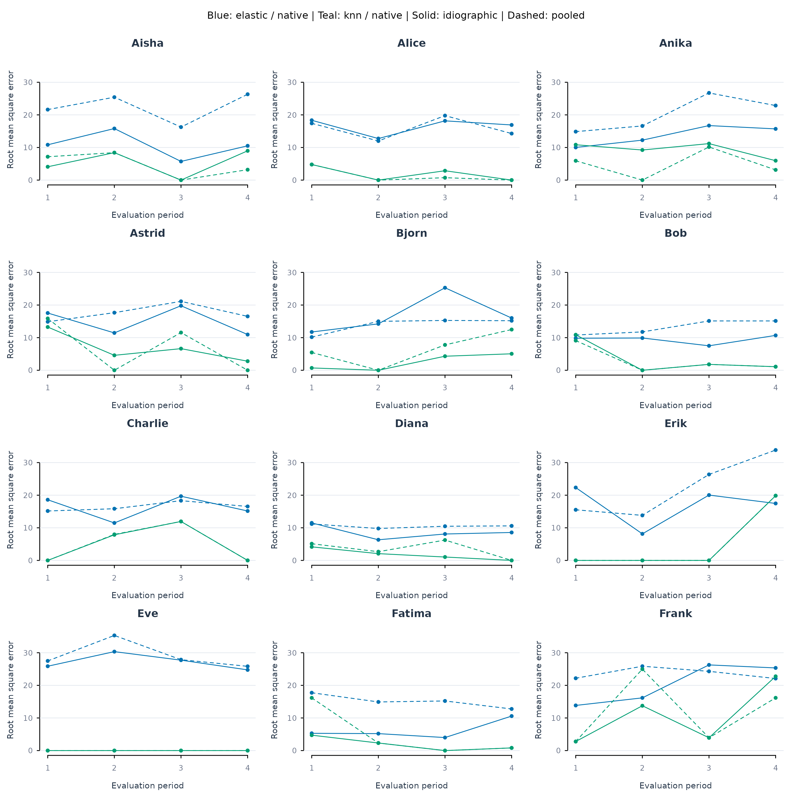
Figure 15. RMSE across four successive evaluation periods for each learner. Colour identifies the algorithm; solid lines show idiographic models and dashed lines show pooled models.
Each period contains eight observations per learner, so
period-specific errors can fluctuate substantially. A rise in RMSE
identifies a period with poorer predictions; explaining that rise
requires examining the observations and their context. The four periods
are successive evaluations of overlapping development histories, which
should be considered when interpreting apparent trends.
metrics(rolling_fit) combines prediction errors across the
folds, while the figure retains their timing.
Interpretation and reporting
Idiographic prediction addresses three related aspects of individual variation: whether a person’s outcome is predictable from the measured variables, which algorithm represents that relationship adequately, and which predictors contribute to the fitted model. The examples show why these questions should be examined together. A favourable overall error can accompany substantial variation across learners, and similar overall errors can accompany different predictor profiles.
The pooled comparison provides a reference for assessing the consequences of estimating separate models. A gain in person-specific accuracy is an empirical finding that depends on the learner, algorithm, predictors, and evaluation period. An idiographic model’s interpretation concerns the learner whose observations were used to develop it. Its performance on additional observations from that learner provides evidence about that application; application to other learners requires a separate evaluation.
The interpretation also depends on data quality and the evaluation design. Missing values may change which records are available, and short series may provide insufficient information for fitting or tuning. Failed fits should be reported with the number of successfully evaluated learners. Predictor importance should be read alongside accuracy and the relationships among predictors. The importance results presented here describe contemporaneous prediction and can guide further investigation of individual patterns; causal claims require an appropriate design.
A report should specify the outcome and predictors, their measurement timing, the number of observations per learner, the training and evaluation periods, the algorithms and settings considered, and the model-selection procedure. Results should present learner-level accuracy alongside its overall summary, compare models using the same observations, and retain individual predictor profiles. Repeated evaluation can then establish how these findings vary as further observations become available.